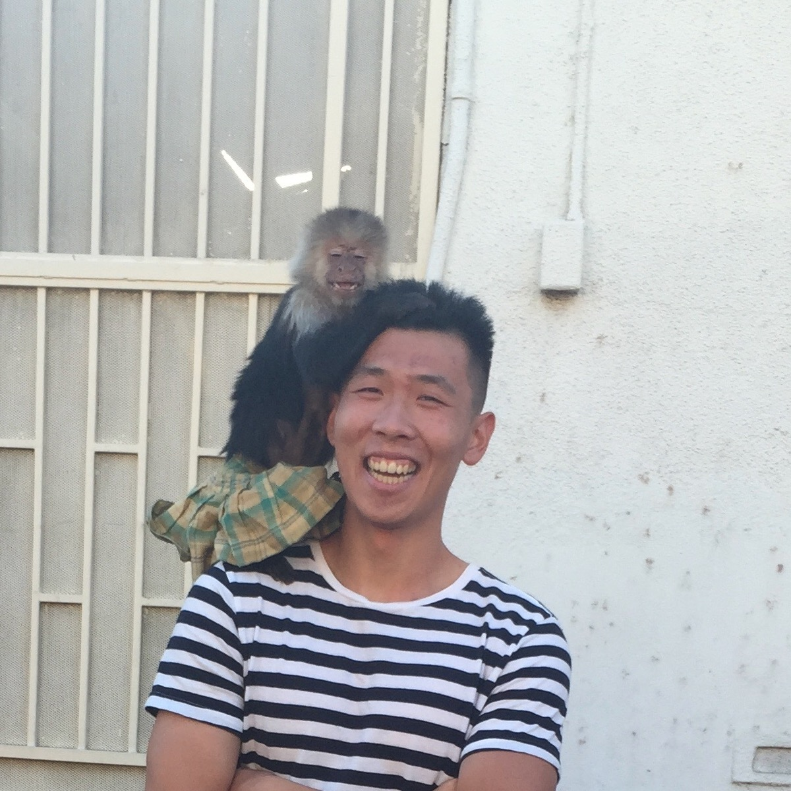

Hello. My name is Kevin Chang and I teach data structures at UC Berkeley.
This is my personal website, currently a work in progress. Originally this was supposed to be a site for learning CS61B material as well, but I've long since realized there are plenty of thoroughly fleshed out resources out there. Until I decide what to do, enjoy my low-effort Web Design DeCal final project.